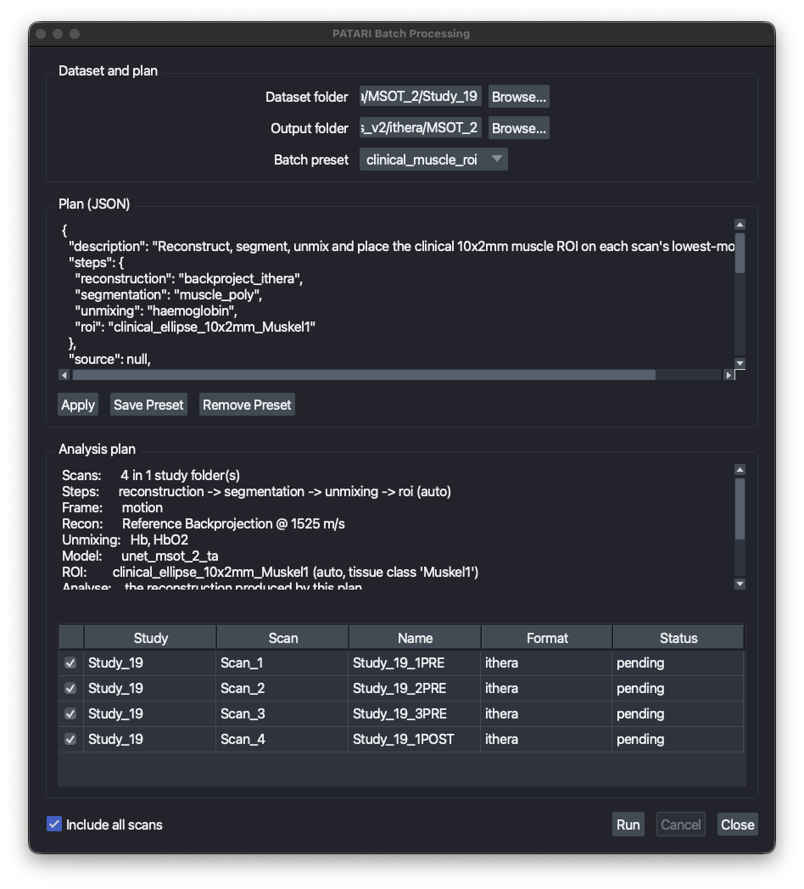

Batch Processing¶
Batch mode applies one saved analysis to a whole dataset without supervision. The intended workflow is to tune the analysis on a single representative scan in the GUI, save each step as a preset, and then point batch mode at the study folder. Because batch mode drives the same controllers the docks do, the numbers it writes are the numbers you would have produced by hand.
Open it from the menu bar: OPTARI → Batch Processing…

Before you start¶
Batch mode runs presets, it does not create them. Set up and save the presets you want first:
| Step | Where you tune it | Preset folder |
|---|---|---|
| Reconstruction | Reconstruction dock | ~/.optari/config/presets/reconstruction |
| Segmentation | Segmentation dock | ~/.optari/config/presets/segmentation |
| Unmixing | Unmixing dock | ~/.optari/config/presets/unmixing |
| ROI | Annotation dock, Save ROI preset | ~/.optari/config/presets/roi |
The batch preset¶
A batch preset is a small JSON file in ~/.optari/config/presets/batch that names the presets above rather than copying them. A step is a preset name and nothing else, so every setting has exactly one home and one thing to cite. Three are shipped: clinical_muscle_roi, existing_recon_roi and convert_to_hdf5.
{
"steps": {
"reconstruction": "backproject_ithera",
"segmentation": "muscle_poly",
"unmixing": "haemoglobin",
"roi": "clinical_ellipse_10x2mm_Muskel1"
},
"source": null,
"frame": "motion",
"measure": {"layers": "analysis", "all_channels": true, "all_frames": false},
"outputs": {"xlsx": true, "hdf5": false, "overlay_png": true, "overlay_layer": null}
}
Every key is documented in Presets. In short: steps names what runs, source picks which reconstruction it runs on, frame picks the anchor frame for the overlay/report ("motion" or a number), measure says how wide to measure, and outputs says what to write.
Edit a plan directly in the batch window: the JSON editor shows the selected preset, Apply re-checks it, and Save Preset writes it back under a name of your choosing. Nothing needs editing by hand in ~/.optari.
Note that how an ROI is placed (static or auto) belongs to the ROI preset, not the batch plan, so an ROI behaves the same whether you place it from the dock or from a batch run.
Choosing which reconstruction to analyse¶
One batch run works on exactly one reconstruction. That reconstruction feeds unmixing, the ROI measurement and the overlay, so a scan that already contains several reconstructions still yields one unambiguous analysis.
The source key picks it, as a layer-name prefix:
- Leave it
nullalongside areconstructionstep to analyse the reconstruction the plan just produced. - Set it to something like
"Recon: iThera"and drop thereconstructionstep to analyse a reconstruction already stored in each file. That is what the shippedexisting_recon_roipreset does. - Leaving it
nullwith noreconstructionstep falls back to the scan's default OA layer, and the window says so, since that is implicit rather than chosen.
With measure.layers at its default "analysis", the table holds that reconstruction and what this run unmixed from it. Set it to "all_pa" to measure every OA layer in the scan instead, including reconstructions the plan did not make.
Running¶
- Pick the dataset folder. Any folder containing
Scan_*entries counts as a study, so bothdataset/Study_1/Scan_1.hdf5trees and a single flat folder of scans work. - Pick an empty output folder. Batch mode refuses to start if it already holds results from an earlier run.
- Pick the batch preset.
The window then shows the resolved analysis plan and every scan it found. Anything that would make the run fail is listed before it starts, and Run stays disabled until the list is empty. Checks made up front include missing presets, an unknown segmentation model, an ROI whose tissue_class the chosen model never produces, unknown chromophores.
Uncheck individual scans to leave them out. During the run each row gets a live status, and the viewer works through the dataset visibly. Leave it alone while it runs; Cancel stops after the current step.
When the run ends a summary dialog appears, listing any failures, and the per-scan statuses stay on screen so you can read them in place. Change the output folder to plan another run.
Outputs¶
<output folder>/
batch_roi_table.xlsx # every measurement, all scans, same format as the GUI export
batch_report.xlsx # one row per scan: status, failed step, reason, timings
batch_<timestamp>.log # the full run log, including tracebacks
overlays/<Study>_<Scan>_F<frame>_C<channel>.png
hdf5/<Study>/<Scan>.hdf5
ipasc/<Study>/<Scan>_ipasc.hdf5
HDF5 and IPASC exports mirror the input layout, so a converted dataset opens exactly like the original. Overlays stay in one flat folder, since flipping through them in order is the point.
batch_roi_table.xlsx is the main deliverable and is identical in shape to the Saved Analysis export, so it imports back into the ROI dock and combines with tables from other sessions. Both it and the report are rewritten after every scan, so a run interrupted after four hours keeps everything measured so far.
When a scan fails¶
A failing scan never stops the run. The failure is logged, that scan is marked failed in batch_report.xlsx with the step and reason, and the next scan starts. Typical per-scan failures are a corrupt or unreadable file, wavelengths the preset needs but the scan was not acquired at, an ROI that does not fit the scan's field of view, and a segmentation class absent from the analysis frame.
To retry only the failures, sort batch_report.xlsx by status, then run the same plan again into a new output folder with only those scans checked.
Converting vendor data in bulk
A plan with no steps and hdf5 or ipasc enabled is a pure format converter: it reads each vendor scan and writes it out again, with no analysis at all. That is what the shipped convert_to_hdf5 preset does; switch on ipasc instead (or as well) for the interoperable format.
Raw time series (IPASC) datasets
An IPASC file holds the raw acoustic signal and no ultrasound, so on such a dataset a plan needs a reconstruction step before anything can be measured, and cannot run segmentation (that needs ultrasound). frame: "motion" also needs ultrasound and falls back to frame 0; give a frame number instead.
One run at a time
Batch mode uses the same single background-task slot as the docks. It refuses to start while another task is running, and the docks are disabled for the duration of a run.